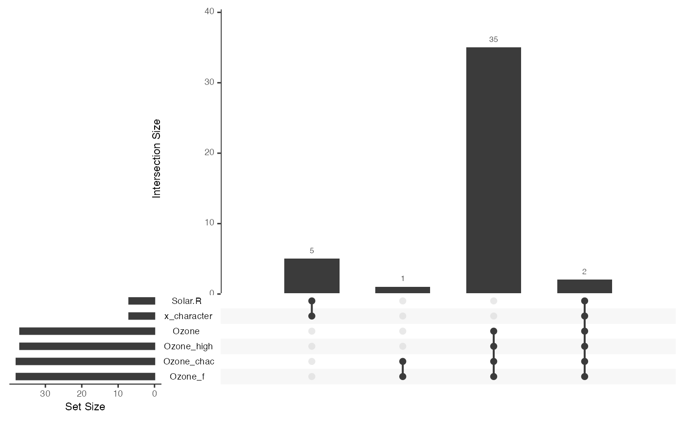
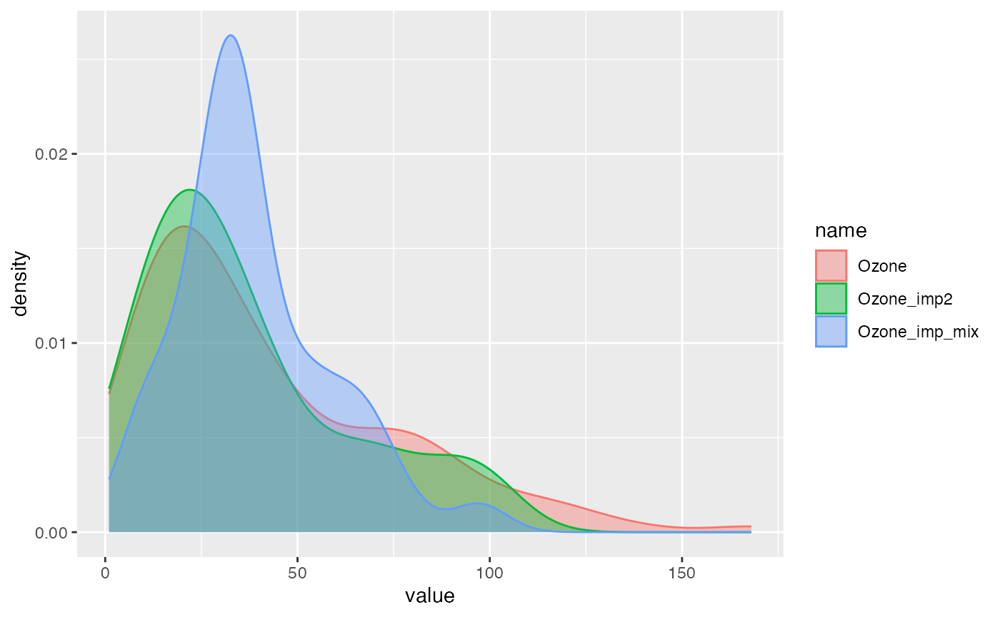

vignettes/miceFast-intro.Rmd
miceFast-intro.RmdThis vignette introduces the miceFast package, which
provides fast imputations in an object-oriented programming style.
The underlying methods rely on quantitative models with closed-form
solutions implemented via linear algebra operations.
Additional utility functions are provided for easy integration with popular R packages such as dplyr and data.table.
Before you begin, ensure the miceFast package is installed. You may also want to install a high-performance BLAS library for significant speedups.
The miceFast package accelerates imputations for quantitative models (with closed-form solutions) by using efficient linear algebra routines. It offers substantial speed improvements in:
Note: For details on the performance-testing procedure, see the file
performance_validity.Rin theextdatafolder. Additional simulation plots (which you are free to modify) are located inextdata/images.
Environment: R 4.2 on Mac M1.
Missing data is a common issue in data analysis. One approach is to delete any row containing missing observations, though this can degrade the quality or representativeness of your dataset. Another, often better, approach is to use imputation methods (such as multiple or regular imputations) to fill in missing data, leveraging observed independent variables.
Since R and Python are user-friendly but can be slower for heavy computation, miceFast uses efficient C++/RcppArmadillo routines under the hood to speed up the imputation process.
The miceFast package provides additional functions
(fill_NA and fill_NA_N) that are designed to
be stable in the presence of user-level mistakes or complex data
structures. Below are minimal examples using dplyr and
data.table.
data(air_miss) # airquality with additional variables
upset_NA(air_miss, 6)Below we show how to:
tryCatch.
# VIF (Variance Inflation Factor) > ~10 suggests collinearity problems.
VIF(
air_miss,
posit_y = "Ozone",
posit_x = c("Solar.R", "Wind", "Temp", "x_character",
"Day", "weights", "groups")
)## [,1]
## [1,] 24.978996
## [2,] 1.445308
## [3,] 3.077776
## [4,] 42.248792
## [5,] 1.083795
## [6,] 1.100853
## [7,] 2.954588
air_miss <- air_miss %>%
# Impute with grouping and weights
group_by(groups) %>%
do(mutate(.,
Solar_R_imp = fill_NA(
x = .,
model = "lm_pred",
posit_y = "Solar.R",
posit_x = c("Wind", "Temp", "Intercept"),
w = .[["weights"]]
)
)) %>%
ungroup() %>%
# Impute a discrete variable
mutate(x_character_imp = fill_NA(
x = .,
model = "lda",
posit_y = "x_character",
posit_x = c("Wind", "Temp")
)) %>%
# Log regression because Ozone is roughly log-normal
mutate(Ozone_imp1 = fill_NA(
x = .,
model = "lm_bayes",
posit_y = "Ozone",
posit_x = c("Intercept"),
logreg = TRUE
)) %>%
# Impute by position indices
mutate(Ozone_imp2 = fill_NA(
x = .,
model = "lm_bayes",
posit_y = 1,
posit_x = c(4, 6),
logreg = TRUE
)) %>%
# Imputations (mean of 30 draws)
mutate(Ozone_imp3 = fill_NA_N(
x = .,
model = "lm_noise",
posit_y = "Ozone",
posit_x = c("Intercept", "x_character_imp", "Wind", "Temp"),
w = .[["weights"]],
logreg = TRUE,
k = 30
)) %>%
mutate(Ozone_imp4 = fill_NA_N(
x = .,
model = "lm_bayes",
posit_y = "Ozone",
posit_x = c("Intercept", "x_character_imp", "Wind", "Temp"),
w = .[["weights"]],
logreg = TRUE,
k = 30
)) %>%
group_by(groups) %>%
# Single evaluation model
do(mutate(.,
Ozone_imp5 = fill_NA(
x = .,
model = "lm_pred",
posit_y = "Ozone",
posit_x = c("Intercept", "x_character_imp", "Wind", "Temp"),
w = .[["weights"]],
logreg = TRUE
)
)) %>%
do(mutate(.,
Ozone_imp6 = fill_NA_N(
x = .,
model = "pmm",
posit_y = "Ozone",
posit_x = c("Intercept", "x_character_imp", "Wind", "Temp"),
w = .[["weights"]],
logreg = TRUE,
k = 20
)
)) %>%
ungroup() %>%
# Combine imputations
mutate(Ozone_imp_mix = rowMeans(select(., starts_with("Ozone_imp")))) %>%
# Protect against errors in small groups
group_by(groups) %>%
do(mutate(.,
Ozone_chac_imp = tryCatch(
fill_NA(
x = .,
model = "lda",
posit_y = "Ozone_chac",
posit_x = c("Intercept", "Month", "Day", "Temp", "x_character_imp"),
w = .[["weights"]]
),
error = function(e) .[["Ozone_chac"]]
)
)) %>%
ungroup()
# Compare original vs. imputed distributions
compare_imp(air_miss, origin = "Ozone", target = "Ozone_imp_mix")
# Or compare multiple imputation columns
compare_imp(air_miss, origin = "Ozone", target = c("Ozone_imp2", "Ozone_imp_mix"))
Below is a similar approach using data.table syntax.
# Imputations
air_miss[, Solar_R_imp := fill_NA_N(
x = .SD,
model = "lm_bayes",
posit_y = "Solar.R",
posit_x = c("Wind","Temp","Intercept"),
w = .SD[["weights"]],
k = 100
), by = .(groups)] %>%
.[, x_character_imp := fill_NA(
x = .SD,
model = "lda",
posit_y = "x_character",
posit_x = c("Wind","Temp","groups")
)] %>%
.[, Ozone_imp1 := fill_NA(
x = .SD,
model = "lm_bayes",
posit_y = "Ozone",
posit_x = c("Intercept"),
logreg = TRUE
)] %>%
.[, Ozone_imp2 := fill_NA(
x = .SD,
model = "lm_bayes",
posit_y = 1,
posit_x = c(4,6),
logreg = TRUE
)] %>%
.[, Ozone_imp3 := fill_NA_N(
x = .SD,
model = "lm_noise",
posit_y = "Ozone",
posit_x = c("Intercept","x_character_imp","Wind","Temp"),
w = .SD[["weights"]],
logreg = TRUE,
k = 30
)] %>%
.[, Ozone_imp4 := fill_NA_N(
x = .SD,
model = "lm_bayes",
posit_y = "Ozone",
posit_x = c("Intercept","x_character_imp","Wind","Temp"),
w = .SD[["weights"]],
logreg = TRUE,
k = 30
)] %>%
.[, Ozone_imp5 := fill_NA(
x = .SD,
model = "lm_pred",
posit_y = "Ozone",
posit_x = c("Intercept","x_character_imp","Wind","Temp"),
w = .SD[["weights"]],
logreg = TRUE
), by = .(groups)] %>%
.[, Ozone_imp6 := fill_NA_N(
x = .SD,
model = "pmm",
posit_y = "Ozone",
posit_x = c("Intercept","x_character_imp","Wind","Temp"),
w = .SD[["weights"]],
logreg = TRUE,
k = 10
), by = .(groups)] %>%
# Average across a set of methods
.[, Ozone_imp_mix := apply(.SD, 1, mean), .SDcols = Ozone_imp1:Ozone_imp6] %>%
# tryCatch for small group issues or collinearity
.[, Ozone_chac_imp := tryCatch(
fill_NA(
x = .SD,
model = "lda",
posit_y = "Ozone_chac",
posit_x = c("Intercept","Month","Day","Temp","x_character_imp"),
w = .SD[["weights"]]
),
error = function(e) .SD[["Ozone_chac"]]
), by = .(groups)]You can generate correlated data via corrData:
# Constructors:
new(corrData, nr_cat, n_obs, means, cor_matrix)
new(corrData, n_obs, means, cor_matrix)
# Some relevant methods:
cd_obj$fill("type") # "contin", "binom", or "discrete"nr_cat: number of categories for a discrete dependent
variablen_obs: number of observationsmeans: centers for independent variablescor_matrix: a positive-definite correlation matrixExample usage:
The miceFast module performs fast imputations via various built-in models. Below is a summary of its main methods:
set_data(x): Provide the data as a
numeric matrix by reference.set_g(g): Provide a grouping variable
(numeric vector, must be positive, no NAs).set_w(w): Provide a weighting variable
(numeric vector, must be positive, no NAs).impute(model, posit_y, posit_x):
Single imputation according to the chosen model.impute_N(model, posit_y, posit_x, k):
Multiple imputations (averaged result) for certain models.update_var(posit_y, imputations):
Permanently update the object’s data for the specified column with new
imputations.vifs(posit_y, posit_x): Compute
Variance Inflation Factors.sort_byg() /
is_sorted_byg(): Sort the data by the
grouping variable (or check if sorted).which_updated(): Check which variables
have been permanently updated in the object.Supported models:
"lda": Linear discriminant analysis (for categorical
posit_y)."lm_pred": Standard linear model prediction (including
a mean-imputation approach if you only include an intercept)."lm_bayes": Linear model with Bayesian noise."lm_noise": Similar to "lm_bayes" but with
different noise assumptions."pmm": Predictive Mean Matching (used via
impute_N).Note: For purely mean imputation, add an intercept column and use
"lm_pred". The LDA model requires at least 15 complete observations. Linear models require at least as many complete observations as the number of predictors.
data <- cbind(as.matrix(mice::nhanes), intercept = 1, index = 1:nrow(mice::nhanes))
model <- new(miceFast)
model$set_data(data)
# Single imputation, linear model
imp_result <- model$impute("lm_pred", posit_y = 2, posit_x = 5)
model$update_var(2, imp_result$imputations)
# LDA imputation for a categorical variable
model$update_var(3, model$impute("lda", 3, c(1,2))$imputations)
# Multiple imputation example
multi_imp <- model$impute_N("lm_bayes", 4, c(1,2,3), k = 10)
model$update_var(4, multi_imp$imputations)
# Check which variables were updated
model$which_updated()## [1] 2 3 4
# Always be cautious with 'update_var'
# since it permanently alters the object and your data matrix.
data <- cbind(as.matrix(airquality[,-5]), intercept = 1, index = 1:nrow(airquality))
weights <- rgamma(nrow(data), 3, 3)
groups <- as.numeric(airquality[,5])
model <- new(miceFast)
model$set_data(data)
model$set_w(weights)
model$set_g(groups)
# Impute with group-wise weighting
model$update_var(1, model$impute("lm_pred", 1, 6)$imputations)
model$update_var(2, model$impute_N("lm_bayes", 2, c(1,3,4,5,6), k = 10)$imputations)
# Inspect updated data, returning to original order via model$get_index()
head(cbind(model$get_data(), model$get_g(), model$get_w())[order(model$get_index()), ], 4)## [,1] [,2] [,3] [,4] [,5] [,6] [,7] [,8] [,9]
## [1,] 41 190 7.4 67 1 1 1 5 1.2183624
## [2,] 36 118 8.0 72 2 1 2 5 1.2866076
## [3,] 12 149 12.6 74 3 1 3 5 0.7953631
## [4,] 18 313 11.5 62 4 1 4 5 0.7386522
data <- cbind(as.matrix(airquality[, -5]), intercept = 1, index = 1:nrow(airquality))
weights <- rgamma(nrow(data), 3, 3)
groups <- as.numeric(sample(1:8, nrow(data), replace = TRUE))
model <- new(miceFast)
model$set_data(data)
model$set_w(weights)
model$set_g(groups)
# The data will be automatically sorted by 'groups' during the first imputation:
model$update_var(1, model$impute("lm_pred", 1, 6)$imputations)## Warning in model$impute("lm_pred", 1, 6):
## Data was sorted by the grouping variable - use `get_index()` to retrieve an order
model$update_var(2, model$impute_N("lm_bayes", 2, c(1,3,4,5,6), 10)$imputations)
head(cbind(model$get_data(), model$get_g(), model$get_w())[order(model$get_index()), ], 4)## [,1] [,2] [,3] [,4] [,5] [,6] [,7] [,8] [,9]
## [1,] 41 190 7.4 67 1 1 1 3 0.8644072
## [2,] 36 118 8.0 72 2 1 2 7 0.5708125
## [3,] 12 149 12.6 74 3 1 3 6 0.3919961
## [4,] 18 313 11.5 62 4 1 4 8 1.0201001Creating matrices from data frames: Remember
that standard R matrices can only hold one data type (often numeric).
Factor and character columns must be transformed (e.g., via
model.matrix).
mtcars$cyl <- factor(mtcars$cyl)
mtcars$gear <- factor(mtcars$gear)
mtcars_mat <- model.matrix(~ ., data = mtcars, na.action = "na.pass")Variance Inflation Factors (VIF): VIF measures how much the variance of a regression coefficient is inflated due to collinearity. High values (>10) may indicate problematic collinearity.
Exposing C++ functions and classes with Rcpp
modules
Dirk Eddelbuettel and Romain François (2018)
https://dirk.eddelbuettel.com/code/rcpp/Rcpp-modules.pdf
RcppArmadillo: Easily Extending R with High-Performance
C++ Code
Dirk Eddelbuettel and Conrad Sanderson (2012)
https://dirk.eddelbuettel.com/papers/RcppArmadillo-intro.pdf
Extending R with C++: A Brief Introduction to
Rcpp
Dirk Eddelbuettel and James Joseph Balamuta (2018)
https://dirk.eddelbuettel.com/code/rcpp/Rcpp-introduction.pdf
MICE: Multivariate Imputation by Chained Equations in
R
Stef van Buuren (2013)
CSCE 666: Pattern Analysis
Ricardo Gutierrez-Osuna (Fall 2013)